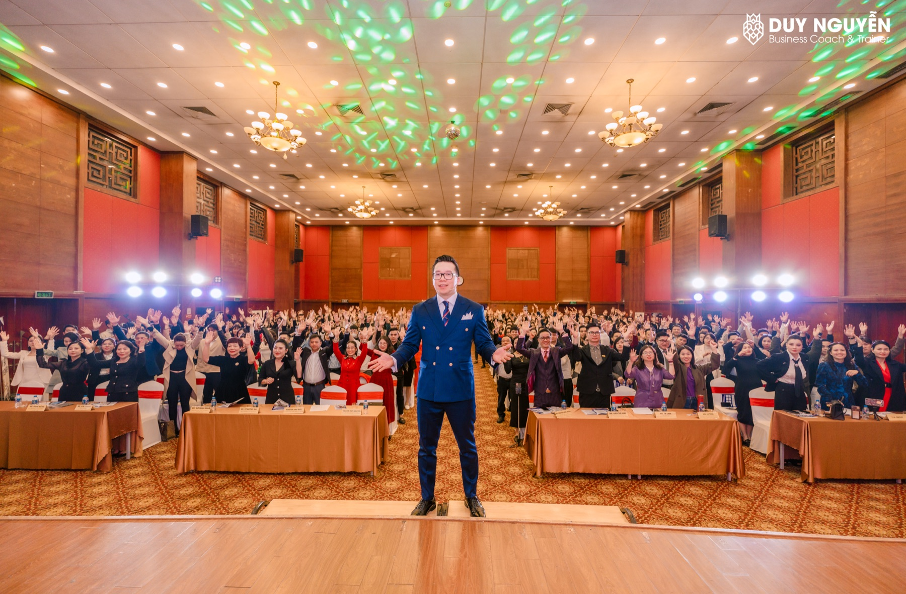
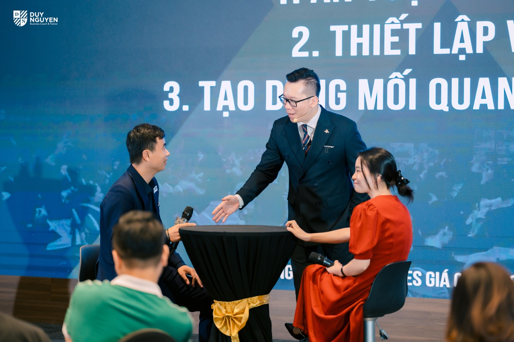

Mang việc đang vướng tới, về với phương án làm được ngay trong tuần
Master Club là mức đồng hành hằng tuần cùng Coach Duy trong cộng đồng Next Gen Founder (nhà sáng lập thế hệ mới). Bạn mang một việc thật trong doanh nghiệp tới, cùng Duy và những người chủ khác mổ xẻ cho ra cách làm, rồi về làm ngay. Đích đến là doanh nghiệp của bạn bớt dần những việc phải chờ người chủ.

40 triệu đồng một nămĐăng ký tới hết 31/12/2026, bạn học miễn phí chương trình chuyên đề trong 12 tháng.
Zoom 2,5 tới 3 tiếng cùng Duy. Bạn đăng ký lượt để mang việc của mình ra mổ xẻ.
Chờ chốt: thứ và giờ cố địnhDành cho người đăng ký tới hết ngày 31/12/2026, tính từ ngày đăng ký.
Bạn và Duy ngồi lại xem việc nào đã khác, việc nào chưa.
Hạn có câu trả lời ở nhóm hỗ trợ, cho những câu hỏi tới giữa tuần.
Vì sao Duy mở Master Club
Đội ngũ tư vấn của Duy đã nói chuyện với khá nhiều chủ doanh nghiệp trong cộng đồng. Người nói về quy trình, người nói về đội ngũ, nhưng nghe kỹ thì nhiều câu chuyện kẹt đúng một chỗ, và chỗ đó hay được nói ra bằng những câu như thế này.
- Khách hỏi thì nhiều, mà ra quyết định thì ít.
- Nhân viên tư vấn theo cảm tính, mỗi người một kiểu.
- Việc gì quan trọng cuối cùng cũng quay về tay tôi.
- Tôi biết làm, nhưng không biết dạy lại thế nào cho người khác làm được.
Mình từng ở đúng chỗ đó. Có giai đoạn thương hiệu của Duy đi lên rất nhanh, nhưng doanh nghiệp lại kẹt ở chính mình: việc gì cũng chờ mình quyết, khách lớn nào cũng chờ mình gặp.
Nhìn lại, Duy thấy mình không thiếu kiến thức. Và Duy đoán bạn cũng vậy, bạn đã đọc, đã đi học, đã nghe không ít người chia sẻ rồi.
Điều mình thiếu lúc đó là một chỗ để mang đúng việc đang vướng ra, có người cùng mổ xẻ tới nơi tới chốn, rồi về làm luôn trong tuần.
Duy mở Master Club để có đúng chỗ đó cho bạn, tuần nào cũng có.
Ở Master Club, bạn không phải gỡ việc một mình
Tuần nào cũng có chỗ mang việc tới
Không phải chờ tới khóa học sau hay hẹn được ai đó rảnh. Mỗi tuần có một buổi, và bạn đăng ký lượt khi có việc cần mổ xẻ.
Tuần sau có người hỏi lại
Bạn kể lại đã làm được tới đâu. Biết sẽ có người hỏi, việc đang làm khó bị bỏ dở giữa chừng như khi tự làm một mình.
Câu hỏi giữa tuần không phải để dồn
Nhóm hỗ trợ có AI và nhân sự trả lời trong hai ngày làm việc, nên việc đang làm dở không phải dừng chờ tới buổi sau.
Ngồi cạnh những người chủ cùng loại bài toán
Nhóm kết nối kinh doanh riêng là chỗ để bạn hỏi những chuyện khó nói ở công ty, với người hiểu vì sao nó khó.
Có sẵn thứ để dạy lại nhân viên
Bộ tài liệu và mẫu để bạn sửa theo doanh nghiệp mình, rồi đưa người khác cầm trên tay mà làm theo.
Cứ 90 ngày nhìn lại một lần
Bạn và Duy xem việc nào đã khác, việc nào chưa, để chỉnh cách đi cho chặng sau thay vì cứ thế đi tiếp.
Bạn đang có một việc muốn sửa trước?
Bấm đăng ký, trả lời vài câu hỏi ngắn. Tư vấn viên sẽ liên hệ để nghe kỹ việc bạn đang vướng, rồi hai bên cùng xem Master Club có hợp với bạn lúc này không.
Một tuần ở Master Club
Gọi tên
Trước buổi, bạn nói rõ việc đang làm mình kẹt nhất tuần này, rồi đăng ký lượt.
Mổ xẻ
Tới lượt bạn, Duy và mọi người hỏi cho tới khi thấy chỗ nghẽn thật, rồi cùng tìm ra phương án.
Áp dụng
Sau buổi, bạn chọn một việc trong phương án để làm ngay trong tuần.
Nhìn lại
Tuần sau, bạn kể lại đã làm được tới đâu, còn vướng chỗ nào.

Bạn vẫn ngồi nghe và hỏi thêm. Có khi nghe người khác kể việc của họ, bạn lại nhận ra chỗ nghẽn của chính mình mà trước giờ chưa để ý.
Phần hướng dẫn chung trong buổi có ghi hình để bạn xem lại. Riêng phần mổ xẻ việc của từng người, Duy chỉ ghi hình khi người đó đồng ý.
Bên trong Master Club
Buổi coaching với Duy
Zoom khoảng 2,5 tới 3 tiếng để mổ xẻ việc thật của bạn khi tới lượt. Tuần chưa tới lượt, bạn nghe người khác mổ xẻ và hỏi thêm.
Sau mỗi buổi, bạn chọn một việc để làm trong tuần rồi kể lại. Thứ bạn mang về là việc đã làm thật trên khách thật, nhân viên thật, chứ không phải thêm một buổi đã nghe.
Chương trình chuyên đề hằng tháng
Mỗi tháng một chủ đề, 4 tới 6 buổi Zoom buổi tối do Duy thiết kế, cho những việc một buổi không sửa xong, như dựng lại cách tư vấn của cả đội ngũ hay viết quy trình cho một bộ phận. Bạn chọn đúng chủ đề mình đang kẹt để học.
Thành viên đóng 5 triệu đồng một chương trình. Đăng ký Master Club tới hết 31/12/2026: miễn phí trong 12 tháng.
Mọi khóa học online của Next Gen Founder
Miễn phí, kể cả những khóa làm sau này. Bạn xem phần nền ở nhà để buổi coaching dồn hết thời gian cho việc của mình.
Nhóm hỗ trợ có AI và nhân sự
Câu hỏi tới giữa tuần có câu trả lời trong hai ngày làm việc, nên việc đang làm không phải dừng giữa chừng.
Bộ tài liệu và mẫu cao cấp
Mẫu, bảng và tài liệu để sửa theo doanh nghiệp mình, cũng là thứ để người khác cầm trên tay mà làm theo khi bạn dạy lại.
Workshop với chuyên gia khách mời
Hỏi thẳng người đang làm nghề về những chuyện như thuế hay pháp lý, theo đúng tình huống doanh nghiệp của bạn.
Nhóm kết nối kinh doanh riêng
Những người chủ đang giải cùng loại bài toán, để bạn có chỗ hỏi những chuyện khó nói ở công ty.
Các công cụ đặc biệt dành cho thành viên
Công cụ Duy và đội ngũ làm riêng cho thành viên, miễn phí trong suốt thời gian tham gia.
Mỗi tháng còn có buổi giao lưu gặp trực tiếp tại Hà Nội, có Duy dự, mở cho cả cộng đồng. Vé mua riêng, chỉ đủ chi phí tổ chức.
40 triệu đồng một năm, đã gồm thuế giá trị gia tăng
Đăng ký tới hết 31/12/2026, bạn học miễn phí mọi chương trình chuyên đề hằng tháng trong 12 tháng, tính từ ngày đăng ký.
Master Club hợp với ai
Hợp khi bạn có đủ ba điều
- Bạn vẫn đang là người bán chính, hoặc người giữ những khách lớn.
- Bạn đã nói rõ được một việc muốn sửa trước: cách bán, đội ngũ tư vấn, hoặc cách vận hành.
- Bạn sẵn sàng làm thử ngay trong tuần và quay lại kể kết quả.
Chưa hợp lúc này nếu
- Bạn chưa có một doanh nghiệp đang chạy thật.
- Bạn muốn nghe thêm là chính, chưa muốn làm thử trên doanh nghiệp của mình.
- Bạn cần ai đó bảo đảm chắc chắn về kết quả.
- Bạn muốn có người quyết định thay mình.
- Bạn chưa sẵn sàng giữ kín chuyện doanh nghiệp của người khác.
- Bạn vào chủ yếu để bán hàng cho các thành viên khác.
Nếu bạn thấy mình trong cột chưa hợp, mức Thành viên của cộng đồng sẽ hợp với bạn hơn lúc này, và Duy vẫn gặp bạn ở đó.
Ba cấp trong cộng đồng Next Gen Founder
Người đang ấp ủ khởi nghiệp, người mới bắt đầu kinh doanh, chuyên gia và chủ doanh nghiệp muốn xem cách cộng đồng này dẫn dắt trước khi đi sâu.
- Nội dung chọn lọc, podcast, livestream
- Bài tự đánh giá và công cụ để bắt đầu
- Hội thảo định kỳ về những vấn đề người sáng lập hay gặp
- Tư vấn viên gợi ý nên bắt đầu từ chương trình nào
Người chủ đang có một doanh nghiệp chạy thật, vẫn là người bán chính hoặc người giữ những khách lớn, và đã thấy rõ một việc mình muốn sửa trước.
- Buổi coaching hằng tuần với Duy
- Chương trình chuyên đề hằng tháng, miễn phí 12 tháng nếu đăng ký tới hết 31/12/2026
- Mọi khóa học online và workshop với chuyên gia khách mời
- Nhóm kết nối kinh doanh và nhóm hỗ trợ có AI và nhân sự
- Bộ tài liệu và mẫu cao cấp
Nói rõ được một việc muốn sửa trước, sẵn sàng làm thử ngay trong tuần và quay lại kể kết quả.
Người đã có ít nhất một thay đổi thật trong doanh nghiệp, có vấn đề cụ thể cần giải trong mười hai tháng, sẵn lòng chia sẻ và biết giữ bí mật cho nhau.
- Buổi họp nhóm chủ doanh nghiệp hằng tháng
- Buổi cùng tìm điểm nghẽn của doanh nghiệp bạn
- Mạng lưới chọn lọc, hoạt động ngoài công việc
- Quản lý chủ chốt của bạn được tham gia một số hoạt động
Tham gia theo lời mời, sau khi nhóm sáng lập xem xét.
Phí tham gia
- Cách thanh toán
Chuyển khoản, quét mã QR hoặc trả bằng thẻ qua cổng thanh toán. Bạn nhận hóa đơn điện tử.
- Thời hạn
Master Club chỉ có gói một năm, không thu theo tháng hay theo quý.
- Hoàn phí
Phí đã đóng thì không hoàn lại. Vì vậy Duy mong bạn đọc kỹ phần hợp và chưa hợp ở trên, và hỏi tư vấn viên mọi điều còn băn khoăn trước khi đóng.
Điều Duy cam kết, và điều Duy không hứa
Mỗi tuần có một buổi để bạn mang việc thật ra mổ xẻ và về làm ngay, bên cạnh những người chủ đang giải cùng loại bài toán. Cứ 90 ngày, chúng ta ngồi lại xem việc nào đã khác, việc nào chưa.
Duy không hứa doanh thu, số khách, hay chuyện doanh nghiệp tự chạy khi bạn vắng mặt. Những điều đó phụ thuộc vào rất nhiều việc bạn làm sau mỗi buổi, nên Duy không muốn hứa một điều mình không nắm được.
Những điều bạn có thể đang băn khoăn
"40 triệu là khoản không nhỏ, tài chính bên tôi đang chưa thoải mái"
Duy hiểu. Nếu tiền này đang phải lấy từ phần để trả lương hay nhập hàng thì bạn đừng gồng, cứ ở lại cộng đồng ở mức Thành viên, khi nào sẵn sàng chúng ta nói chuyện lại. Còn nếu bạn chỉ đang cân nhắc có đáng hay không, thì bạn thử đặt khoản này cạnh việc đang vướng: một khách lớn bị lỡ, hay thêm một năm việc gì cũng chờ bạn quyết, đang tốn của bạn bao nhiêu.
"Tôi bận lắm, sợ không theo được"
Chính vì bạn bận nên Master Club không giao thêm bài tập. Việc bạn làm trong tuần lấy từ phương án cho chính việc đang vướng, tức là việc đằng nào bạn cũng phải làm. Tuần nào không dự được thì bạn xem lại phần hướng dẫn chung đã ghi hình.
"Tôi muốn xem thử trước đã"
Bạn cứ xem. Ở mức Thành viên, bạn vẫn dự các buổi chung của cộng đồng và thấy được cách Duy làm việc. Khi nào thấy việc đang vướng cần có người cùng mổ xẻ hằng tuần thì bạn đăng ký ở cuối trang này.
"Tôi đã học khá nhiều khóa rồi, Master Club khác gì?"
Ở một khóa học, bạn nghe cách làm chung rồi tự mang về áp vào doanh nghiệp mình. Ở Master Club thì đi ngược lại: bạn mang việc của chính mình tới, mọi người hỏi cho tới khi ra chỗ nghẽn, và tuần sau bạn kể lại đã làm được tới đâu. Phần kể lại đó là chỗ phần lớn khóa học không có.
"Ngành của tôi khác, những người trong nhóm có hiểu việc của tôi không?"
Người trong nhóm không cần làm cùng ngành với bạn. Chuyện khách hỏi nhiều mà chốt ít, nhân viên tư vấn mỗi người một kiểu, việc gì cũng quay về tay chủ, Duy gặp ở rất nhiều ngành khác nhau. Có khi chính người ngoài ngành lại hỏi ra điều mà người trong ngành đã quen tới mức không còn thấy.
"Tôi ngại kể chuyện doanh nghiệp trước nhiều người"
Bạn kể tới đâu là do bạn chọn. Ai vào Master Club cũng phải giữ kín chuyện doanh nghiệp của người khác, và phần mổ xẻ việc của bạn chỉ được ghi hình khi bạn đồng ý. Tuần đầu, nhiều khi bạn chỉ cần ngồi nghe người khác trước.
"Vào rồi mà thấy không hợp thì sao?"
Phí đã đóng thì không hoàn lại, nên Duy muốn bạn biết rõ trước khi vào. Đó cũng là lý do tư vấn viên luôn nói chuyện kỹ với bạn trước khi bạn đóng phí, và Duy viết rõ ở trên ai chưa hợp với Master Club. Còn khi đã vào, cứ 90 ngày bạn và Duy ngồi lại xem việc nào đã khác, việc nào chưa, để chỉnh cách đi cho chặng sau.
"Đóng phí xong thì chuyện gì xảy ra?"
Bạn nhận hóa đơn điện tử và lịch buổi coaching gần nhất, rồi được thêm vào nhóm hỗ trợ và nhóm kết nối kinh doanh. Tuần đầu bạn chưa cần mang việc ra ngay, cứ ngồi nghe một buổi để quen cách mọi người làm việc với nhau.
"Ai chăm sóc tôi trong Master Club?"
Duy trực tiếp dẫn các buổi coaching hằng tuần. Câu hỏi giữa tuần thì bạn gửi vào nhóm hỗ trợ, nơi có AI và nhân sự trả lời trong hai ngày làm việc. Còn trước khi vào, tư vấn viên là người nói chuyện kỹ với bạn và trả lời mọi điều bạn còn băn khoăn.
Nếu bạn muốn bắt đầu
Đăng ký không có nghĩa là phải vào. Nói chuyện xong mà thấy chưa phải lúc, bạn cứ nói thật với tư vấn viên, và Duy vẫn gặp bạn trong cộng đồng như thường.
- Bạn bấm nút bên dưới và trả lời vài câu hỏi ngắn về doanh nghiệp của mình.
- Tư vấn viên liên hệ để nghe kỹ việc bạn đang vướng.
- Hai bên cùng xem Master Club có hợp với bạn lúc này không.
- Nếu hợp, bạn thanh toán và nhận lịch buổi coaching gần nhất.